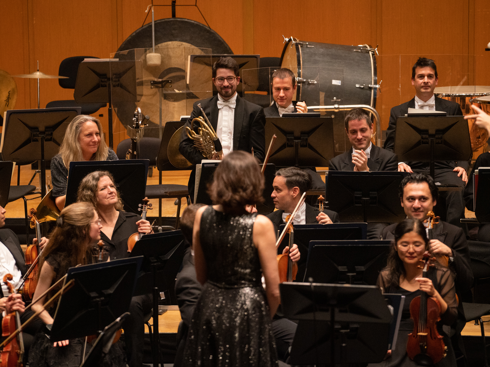
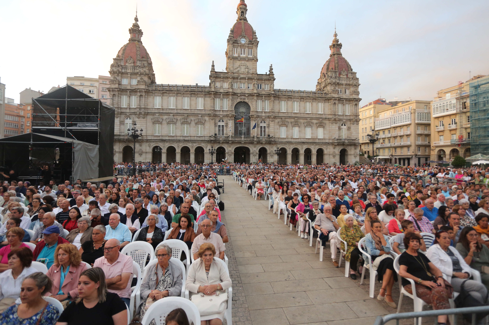
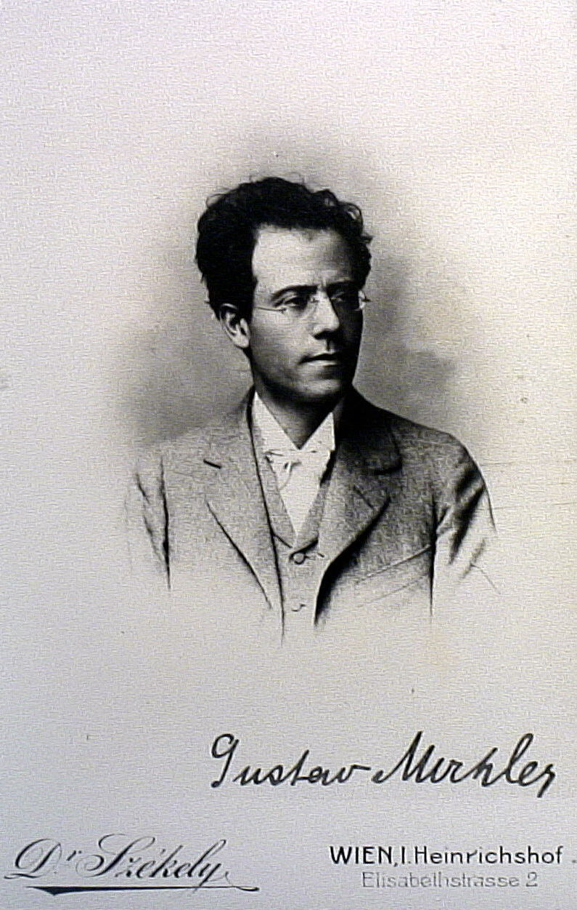
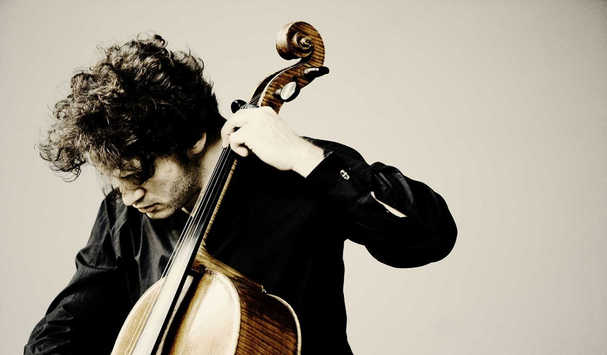
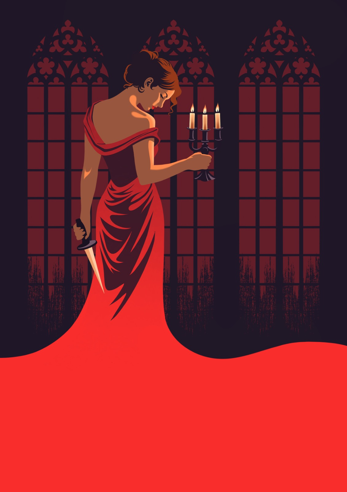

Axenda
-

22 AGO 21:00hConcerto María Pita 2026
Obras de Falla, Buíde e Turina
Director: Roberto González Monjas
Solista: Javier Perianes
Orquestra Sinfónica de Galicia
Praza de María Pita
-

25 SET 20:00hConcerto Abono Venres 1. OSG
GUSTAV MAHLER Sinfonía n.º 3 en re menor
Director: Roberto González Monjas
Solista: Yajie Zhang mezzosoprano
Orquestra Sinfónica de Galicia. Coros feminino e de nenos da OSG
Palacio da Ópera. A Coruña
Mercar entradas -
26 SET 20:00h
Concerto Abono Sábado 1. OSG
GUSTAV MAHLER Sinfonía n.º 3 en re menor
Director: Roberto González Monjas
Solista: Yajie Zhang mezzosoprano
Orquestra Sinfónica de Galicia. Coros feminino e de nenos da OSG
Palacio da Ópera. A Coruña
Mercar entradas -

09 OUT 20:00hConcerto Abono Venres 2. OSG
ROBERT SCHUMANN Concerto para violonchelo en la menor, op. 129 ANTONÍN DVORÁK Sinfonía n.º 7 en re menor, op. 70
Director e solista: Nicolas Altstaedt
Orquestra Sinfónica de Galicia
Palacio da Ópera. A Coruña
Mercar entradas -
10 OUT 20:00h
Concerto Abono Sábado 2. OSG
ROBERT SCHUMANN Concerto para violonchelo en la menor, op. 129 ANTONÍN DVORÁK Sinfonía n.º 7 en re menor, op. 70
Director e solista: Nicolas Altstaedt
Orquestra Sinfónica de Galicia
Palacio da Ópera. A Coruña
Mercar entradas -

22 OUT 19:00hTosca. Festival de Ópera da Coruña.
GIACOMO PUCCINI. Tosca
Director: Oliver Díaz
Solistas: Miren Urbieta-Vega (Floria Tosca), Ragaa Eldin (Mario Cavaradossi), Carlos Álvarez (Barón Scarpia), Javier Agudo (Cesare Angelotti), Enrique Martínez (Spoletta), Pedro Martínez Tapias (Sciarrone), Valeriano Lanchas (Sancristán), Antonio Facal (Carcereiro), Daniela Quiza (pastor)
Orquestra Sinfónica de Galicia. Coros Gaos e Cantabile
Palacio da Ópera. A Coruña
Mercar entradas -
24 OUT 19:00h
Tosca. Festival de Ópera da Coruña.
GIACOMO PUCCINI. Tosca
Director: Oliver Díaz
Solistas: Miren Urbieta-Vega (Floria Tosca), Ragaa Eldin (Mario Cavaradossi), Carlos Álvarez (Barón Scarpia), Javier Agudo (Cesare Angelotti), Enrique Martínez (Spoletta), Pedro Martínez Tapias (Sciarrone), Valeriano Lanchas (Sancristán), Antonio Facal (Carcereiro), Daniela Quiza (pastor)
Orquestra Sinfónica de Galicia. Coros Gaos e Cantabile
Palacio da Ópera. A Coruña
Mercar entradas